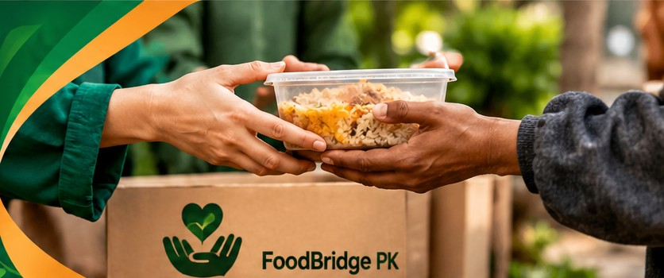
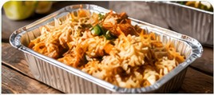
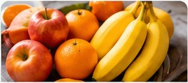
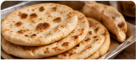

01
Add food details
A donor enters the food name, quantity, pickup location and time.
FoodBridge PK is a community food-sharing concept. Share extra meals, discover available food and help reduce unnecessary food waste.
Explore Food →Donate Food
Three clear steps make food sharing easy to understand.
A donor enters the food name, quantity, pickup location and time.
Visitors browse sample food cards and check the available details.
In a real service, the donor and receiver would confirm the pickup safely.
A few sample listings to show how the platform can look.



Create a sample food listing and help demonstrate the idea behind FoodBridge PK.